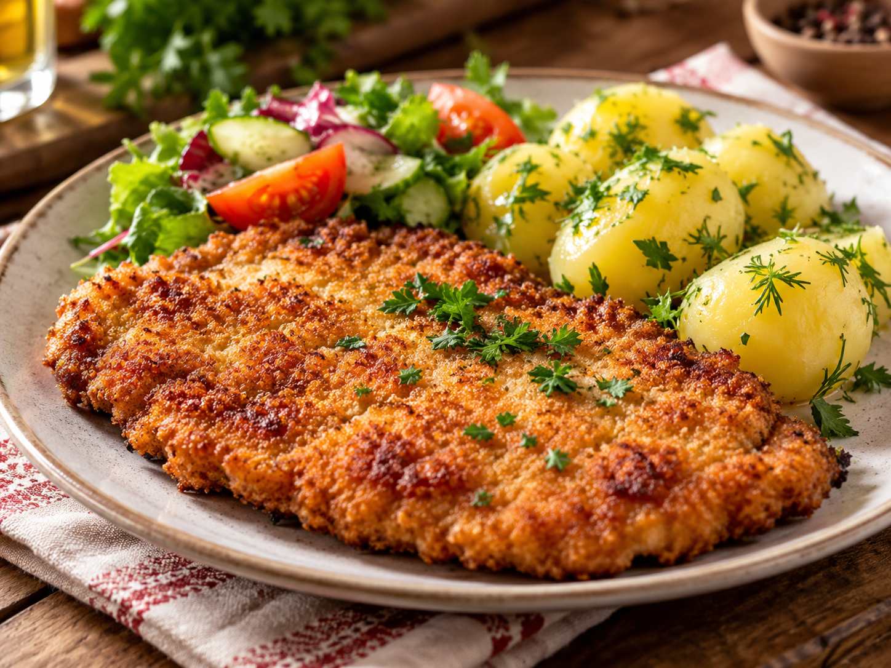
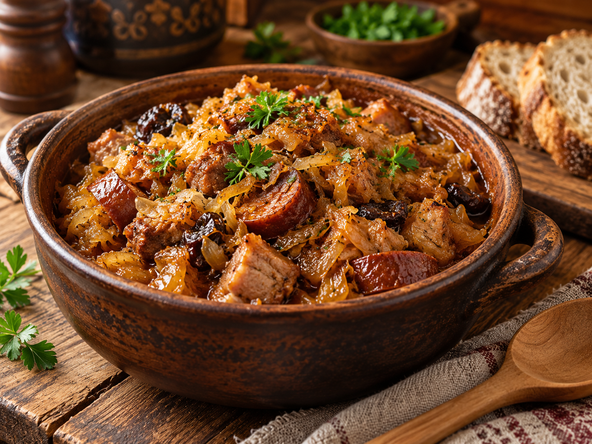
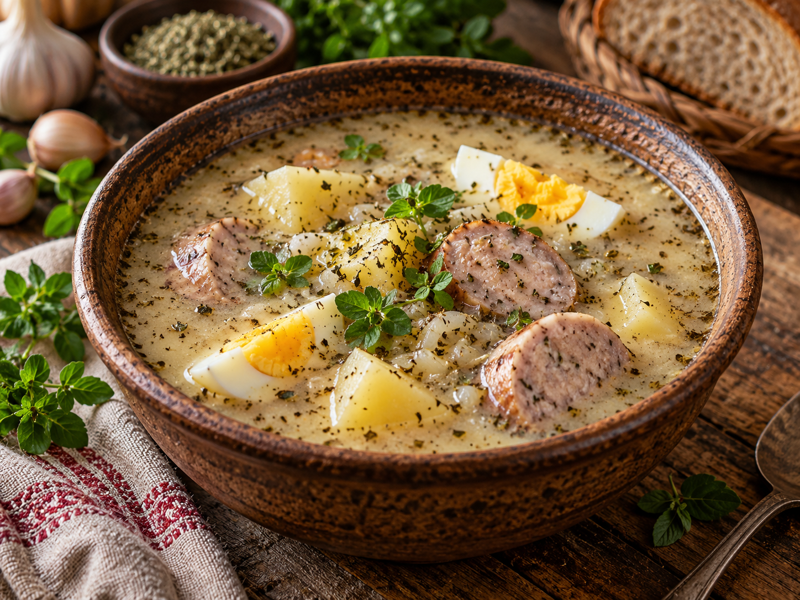
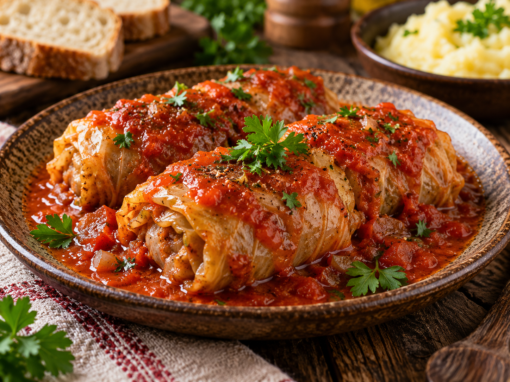

PolishCuisine
Pierogi
The best dish we have here in Poland

Schabowy and ziemniaki
You should definitely try it!

Bigos
You should try it!

Żurek
Żurek with kiełbasa, eggs, horseradish, cream.

Gołąbki
You should try this, rice, minced meat and cabbage